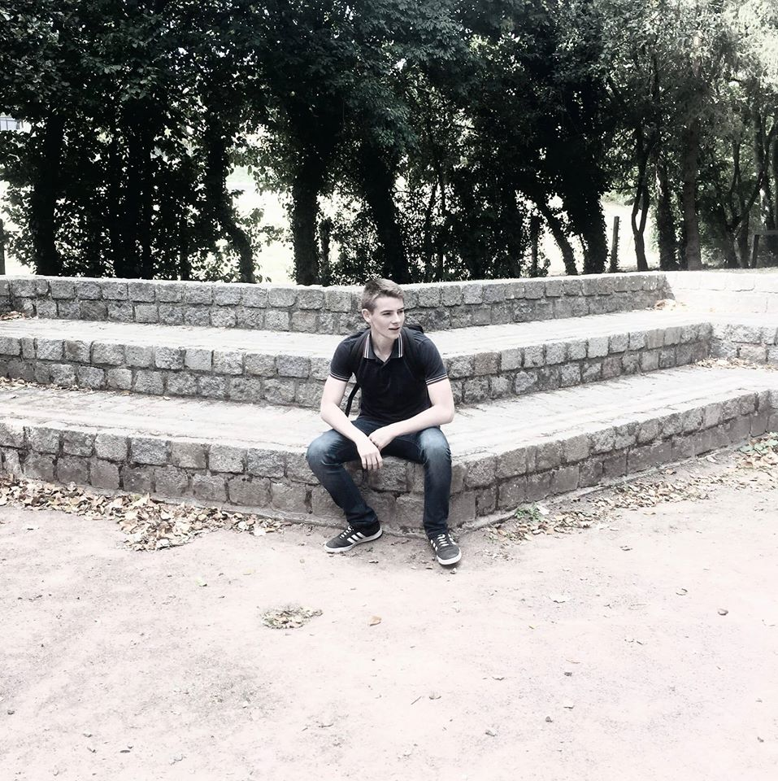

Membre du Groupe de Travail

Basile Esnault
Desccription : En apprentissage au lycée NDLP , 1 ere année BTS SIO
Alexandre Balogh
Desccription : En apprentissage au lycée NDLP , 1 ere année BTS SIO
Enzo Auvray
Desccription : En apprentissage au lycée NDLP , 1 ere année BTS SIO
Théo HAVARD
Desccription : En apprentissage au lycée NDLP , 1 ere année BTS SIO